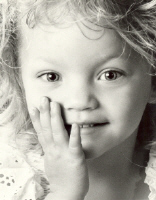
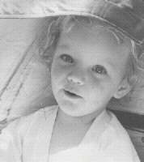
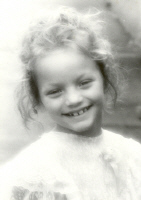
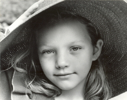
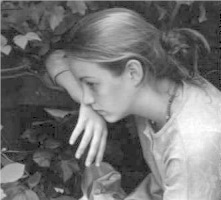
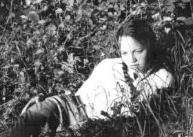
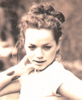
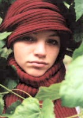
 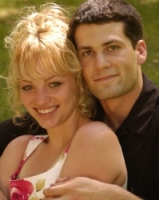
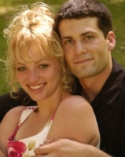
Tiana's Memories:
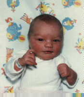
Shira: Princess of Power
My little sister, Shira (no relation to He-Man), is louder than a honking horn (I should know. I heard her calling my name, but I didn't hear my dad honk the horn just before that.), tougher than soap scum on a shower door, and cuter than any other ten-year-old girl. She has enough energy in her petite body to power a fireworks display. There isn't a second that goes by in which she isn't singing, dancing, or talking. Even when she's asleep she talks, which makes it fun for me to ask her personal questions. It's amazing how she turns her chores into an opera performance where she whirls around the house with the vacuum, singing as loud as her lungs will allow. My favorite time to watch her is when there is good dancing music on because she goes absolutely wild. She becomes a ballerina, a ballroom dancer, and a break dancer all at the same time. Her long hair flutters around her face and the negligee she wears that's held up by safety pins flows romantically behind her as she leaps through the air. I often join her in her dance performances so she can have a partner, but I usually end up rolling around on the ground, laughing hysterically. I don't want her to grow up because she's in such a cute stage of her life, but she's acted like a teenager, wearing make-up and talking like a teen, since she was two years old, so there probably won't be much of a change. I love her carefree lifestyle and her creative imagination. If I could relive my childhood with her, I'd be content.